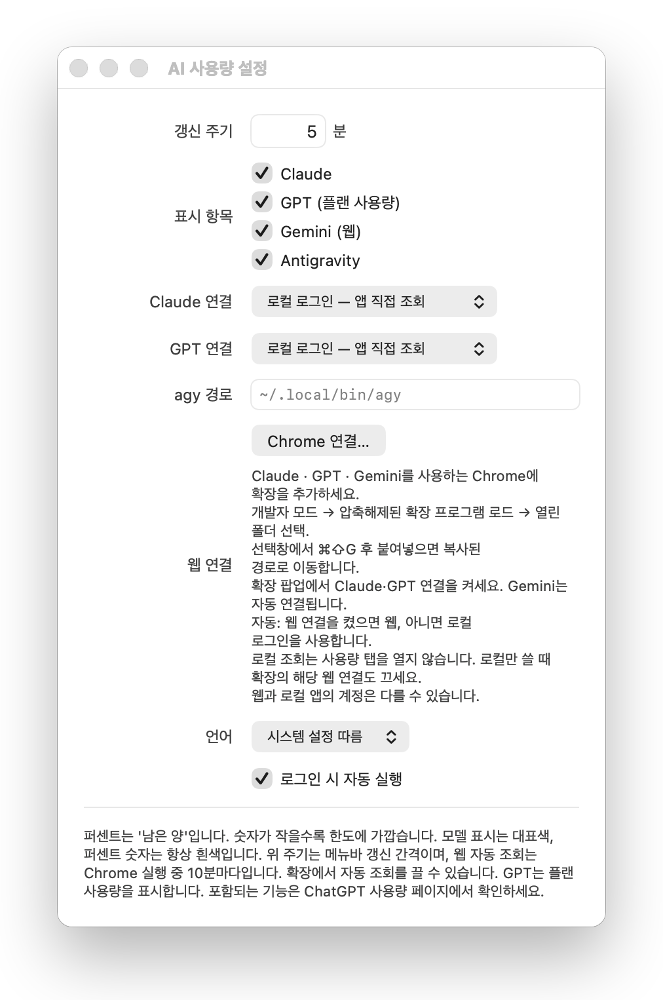

macOS 메뉴바 앱 · 무료 오픈소스
AI 사용량,
메뉴바 한 줄로.
Claude · ChatGPT · Gemini · Antigravity의 남은 한도를 나란히 보여줍니다. 터미널 없이, 이미 로그인해 둔 Chrome 웹 로그인만으로 연결됩니다.
↑ 맨 위 메뉴바의 저 한 줄이 이 앱의 전부입니다.
brew install --cask hong-minji/tap/ai-usage-bar01 — 왜 쓰나요
확인하러 다니지 않아도 됩니다
한도가 얼마나 남았는지 보려고 서비스마다 설정 페이지를 여는 대신, 메뉴바를 한 번 보면 됩니다.
메뉴바 한 줄, 남은 양 기준
숫자는 쓴 양이 아니라 남은 양입니다. 작을수록 한도에 가깝습니다. 5시간·주간 한도가 함께 있으면 가장 적게 남은 쪽을 보여줍니다.
터미널 없이 웹 로그인으로
Chrome에서 Claude·ChatGPT·Gemini에 로그인되어 있으면 됩니다. CLI 설치도 API 키도 필요 없습니다.
Gemini 웹 한도까지
gemini.google.com의 사용 한도와 Antigravity(agy) 코딩 할당량을 각각 보여줍니다.
쿠키·토큰을 꺼내지 않는 연결
앱에 포함된 Chrome 확장은 사용량 페이지에 표시된 숫자만 읽어 이 Mac으로 전달합니다. 쿠키·비밀번호·대화 내용은 읽지 않습니다.
AI 호출 없이 사용량만 조회
모델에 프롬프트를 보내지 않습니다. 앱 자체 메모리는 테스트 Mac에서 약 30–35MB로 측정됐습니다(v1.3.0 기준).
모르는 값을 0%로 꾸미지 않습니다
조회에 실패하면 마지막 성공값과 경과 시간, 오류를 그대로 보여줍니다. 개발자 서버·분석·광고·텔레메트리도 없습니다.
02 — 실제 화면
꾸미지 않은 실제 앱 화면


03 — 연결 방법
쓰던 로그인을 그대로 씁니다
웹만 쓰는 사람과 터미널 도구를 쓰는 사람 모두를 위한 두 가지 방법이 있습니다. 서비스마다 다르게 골라도 됩니다.
Chrome 웹 연결
터미널이 필요 없습니다. Claude · GPT · Gemini에 쓸 수 있습니다.
- 앱에서 설정… → 웹 연결 → Chrome 연결…을 누릅니다.
chrome://extensions/에서 개발자 모드를 켭니다.- 압축해제된 확장 프로그램 로드 → ⌘⇧G → 붙여넣기 → 폴더 선택.
- 확장 팝업에서 Claude · GPT 연결을 켭니다. Gemini는 자동으로 연결됩니다.
기존 로컬 로그인
Claude Code · Codex · agy에 이미 로그인했다면 가장 가볍습니다.
- 앱 설정에서 연결 방식을 로컬 로그인 — 앱 직접 조회로 고릅니다.
- Claude는 macOS가 키체인 접근을 물으면 허용합니다. 토큰은 읽기만 합니다.
- agy는 CLI 설치·로그인 후 표시 항목에서 켭니다.
- 터미널을 켜 둘 필요도, Chrome 탭을 열 필요도 없습니다.
단계별 설명과 주의사항은 README의 연결 방법에 있습니다.
04 — 비교
다른 도구와 무엇이 다른가요
AI 사용량을 보여주는 도구는 이미 여럿 있습니다. 고르기 쉽도록 성격이 다른 대표 도구 두 가지와 나란히 놓았습니다. 다른 프로젝트의 내용은 각 README 기준이며 2026-11-16에 확인했습니다.
| AI Usage Bar | CodexBar | ccusage | |
|---|---|---|---|
| 형태 | Mac 메뉴바 앱 | Mac 메뉴바 앱 (Linux 지원) | 터미널 CLI |
| 보여주는 것 | 구독 플랜의 남은 한도, 서비스 4개 | 100개가 넘는 서비스의 한도·크레딧·비용 | 코딩 에이전트 CLI의 토큰 사용량과 비용 |
| 잘 맞는 사람 | 웹에서 AI를 쓰는 사람, 가볍게 한도만 보고 싶은 사람 | 코딩 에이전트를 여러 개 쓰는 개발자 | Claude Code·Codex 등 CLI 사용자 |
| 웹 로그인 연결 | Chrome 확장이 사용량 페이지의 숫자만 읽음 | 브라우저 쿠키 가져오기 (선택 사항) | 해당 없음 |
| Gemini | gemini.google.com 웹 한도 | Gemini CLI 로그인 기반 할당량 | 해당 없음 |
| 지원 macOS | 13 이상 | 14 이상 | 해당 없음 |
- 코딩 에이전트 여러 개와 API 크레딧까지 한곳에서 보고 싶다면 CodexBar가 더 맞습니다.
- 토큰 사용량과 비용을 날짜·세션별로 분석하고 싶다면 ccusage가 맞습니다.
- 터미널을 쓰지 않거나, Claude·ChatGPT·Gemini 구독의 남은 한도만 가볍게 보고 싶다면 AI Usage Bar를 써보세요.
05 — 설치
내려받아 옮기면 끝
- 릴리스에서 ZIP을 내려받습니다. Apple Silicon·Intel 공용이라 고를 필요가 없습니다.
- 앱을 응용 프로그램 폴더로 옮긴 뒤 실행합니다. Dock 아이콘 없이 메뉴바에 나타납니다.
- 설정…에서 쓰는 서비스만 켜고 연결합니다. 위의 방법 A 또는 B를 따르면 됩니다.
brew install --cask hong-minji/tap/ai-usage-bar처음 실행할 때 macOS가 막을 수 있습니다. 아직 Apple Developer ID 서명·공증이 없는 초기 버전입니다. 한 번 실행을 시도한 뒤 시스템 설정 → 개인정보 보호 및 보안 → 그래도 열기에서 허용하세요.
Windows·Linux에서는 실행되지 않습니다.
06 — 자주 묻는 질문
궁금할 만한 것들
퍼센트는 쓴 양인가요, 남은 양인가요?
남은 양입니다. 숫자가 작을수록 한도에 가깝습니다. 5시간 한도와 주간 한도가 함께 있으면 메뉴바에는 가장 적게 남은 쪽이 표시되고, 메뉴를 펼치면 각각 볼 수 있습니다.
사용량을 확인하면 토큰이나 한도가 줄어드나요?
사용량 조회 요청만 보내고 모델에는 프롬프트를 보내지 않습니다. Antigravity의 /quota 실측에서도 토큰과 턴 수는 0이었습니다.
Claude Code나 Codex 같은 터미널 도구가 없어도 되나요?
네. Chrome에서 Claude·ChatGPT·Gemini에 로그인되어 있으면 앱에 포함된 확장으로 연결할 수 있습니다. 이미 터미널 도구를 쓴다면 그 로그인을 그대로 써도 됩니다.
확장이 쿠키나 대화 내용을 읽나요?
아니요. 사용량 페이지에 표시된 숫자만 읽어 이 Mac의 앱으로 전달합니다. 쿠키·비밀번호·인증 토큰을 추출하지 않고 대화 원문을 전송하지 않습니다.
GPT 숫자는 무엇을 뜻하나요?
ChatGPT 설정 → 사용량에 표시되는 플랜 한도입니다. 채팅 횟수나 별도 모델 한도를 추정하지 않습니다. 어떤 기능이 포함되는지는 ChatGPT 사용량 페이지와 README의 안내를 확인하세요.
macOS가 실행을 막아요.
Apple Developer ID 서명·공증이 아직 없어서입니다. 한 번 실행을 시도한 뒤 시스템 설정 → 개인정보 보호 및 보안 → 그래도 열기에서 허용하면 됩니다. 회사에서 관리하는 Mac에서는 제한될 수 있습니다.
Windows나 Linux에서도 되나요?
아니요. macOS 13 이상에서만 실행됩니다.